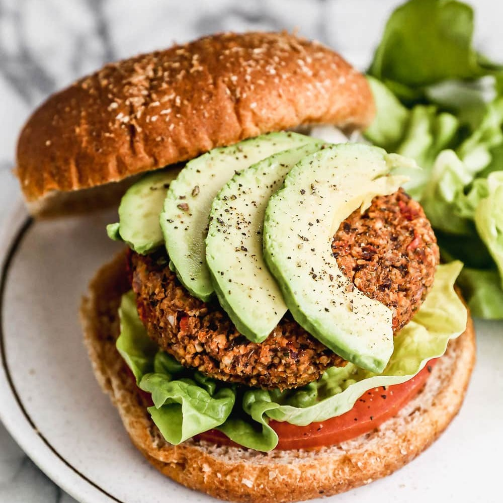

VEGAN BURGER
Home

Description
Connect with your plant side and cook up the BEST Vegan Burger recipe you’ll ever try! Made with black beans, protein-rich ingredients, and warm spices, they’re every bit as satisfying as they are scrumptious.
Lightly crisp outside, tender (not mushy!) inside, and boasting an intense savoriness that you wouldn’t expect in a vegetarian burger recipe, these are hands-down not only the best vegan burgers—they are one of the best burgers, period—I have ever tasted.
Ingredients
FOR THE BURGERS:
- 1 large red pepper cored and roughly chopped
- ½ small red onion roughly chopped
- ½ cup raw almonds
- ¼ cup pepitas pumpkin seeds
- ¼ cup hemp seed hearts
- 2 tablespoons ground flaxseed meal chia seeds, or additional hemp seed hearts
- 2 cloves garlic
- 1 teaspoon kosher salt
- 1 ¼ teaspoons cumin
- ¾ teaspoon chili powder
- ¼ teaspoon smoked paprika
- 1 can black beans, (15 ounces) rinsed and drained
- ½ cup old fashioned rolled oats gluten free if needed
TOPPINGS IDEAS:
- Sliced tomatoes, avocado, arugula, sliced red onions, avocado, plain yogurt (dairy-free if needed), mustard
Steps
- Place a rack in the center of your oven and preheat to 350 degrees F. Line a baking sheet with parchment paper or a silpat mat.
- Place the red pepper and onion in the bowl of a food processor fitted with a steel blade. Pulse until minced. Transfer the mixture to a large mixing bowl.
- To the food processor, add the almonds, pumpkin seeds, hemp seeds, flaxseed meal, garlic, salt, cumin, chili powder, and smoked paprika.
- Blend until it has combined into a coarse grainy mixture. Scrape into the mixing bowl with the onion and red pepper.
- Place the black beans, oats, and 2 tablespoons water in the food processor.
- Puree until the beans are mostly smooth with a few small pieces remaining.
- Transfer to the mixing bowl and stir to combine.
- Scoop the burger mixture in 1/3 cup portions into your hands. Shape into palm-sized patties that are about 1 inch thick.
- Arrange on the baking sheet and bake for 20 minutes, then flip and bake 5-10 additional minutes, until heated through and the outsides are lightly crisp. Serve on buns with any desired toppings.